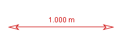
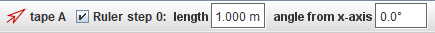
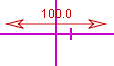
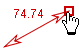
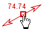
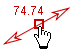

ali izberemo v
spustnem menuju Merilna orodja|Merilni trak. Tvorimo
lahko tudi več merilnih trakov.
ali izberemo v
spustnem menuju Merilna orodja|Merilni trak. Tvorimo
lahko tudi več merilnih trakov.Merilni
trak

Merilni trak uporabljamo za merjenje razdalj in kotov. (Umerjena) realna dolžina traku je izpisana, prikazana pa je tudi na orodni vrstici. Kot med trakom in osjo +x je prikazan le na orodni vrstici.

Ker je merilni trak v bistvu sled, ima svoj menu sledi , ki je dostopen kot Menu sledi na vrstici z menuji ali z desnim klikom v glavnem pogledu na video.
1. Tvorba in uporaba merilnega traku
Merilni
trak tvorimo tako, da kliknemo na gumb Tvori ali izberemo v
spustnem menuju Merilna orodja|Merilni trak. Tvorimo
lahko tudi več merilnih trakov.
Nov merilni trak je v začetku postavljen rahlo nad centrom video slike.

Razdalje merimo tako, da vlečemo enega od koncev traku. Če hočemo premakniti cel trak, vlečemo njegovo sredino.
 

2. Sprostitev položaja
Privzeto ima merilni trak fiksen položaj. --To pomeni, da sta oba njegova konca v enakih položajih na vseh sličicah. Če razkljukamo Fiksen položaj v njegovem menuju nsledi, se bo lahko položaj traku neodvisno spreminjam od sličice do sličice.
3. Zaklepanje merilnega traku
Zaklepanje merilnega traku preprečuje kakršnekoli spremembe njeggovih končnih točk. Trak zaklenemo z vklopom lastnosti Zaklenjeno v njegovem menuju sledi.
Če merilo videa spremenimo, bo izpis vrednosti traku prikazoval drugačno realno (svetovno) dolžino, čeprav se končni točki traku ne spremenita.